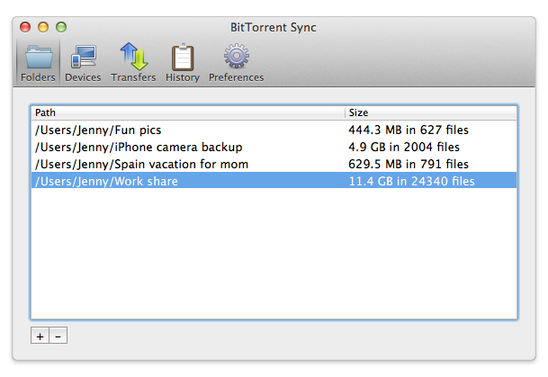

Getting Started
BitTorrent Sync allows you to synchronize an unlimited number folders and files of any size across multiple devices.
- Install BitTorrent Sync on the devices you want to sync.
- Add a folder that you want to synchronize and generate a secret for that folder on one of the devices. The secret is random and unique, and functions like a key that connects multiple devices into one sync network.
- On the other devices, choose a folder to sync and enter the same secret.
- Leave BitTorrent Sync running on all devices you want to keep in sync.
- Manage your sync folders at any time via the application interface on Windows and Mac, Linux (WebUI and config file), or mobile.
Add Folders to Sync
- Click on the ‘+’ button (Mac) or “Add a Sync Folder” button (Windows) at the bottom of the Folders tab. 
- Generate a new secret for your folder (this is a private key needed to connect devices).
- Choose a folder on your computer or external drive (note that you need to have proper permissions to modify the folder). Or click New Folders to create and add a new folder to start syncing.
- Click OK. Your folder will be added to the Sync application and ready to share.
Share a Folder to Start Syncing
- Right click the folder you want to share.
- Select ‘Copy Secret.’ The secret will be copied to your clipboard.
- Send that secret to your friends or collaborators; have them join the folder from their Sync Application.

Join Existing Folder
- Click on the ‘+’ button (Mac) or “Add a Sync Folder” button (Windows) at the bottom of the Folders tab in your Sync Application.
- Enter the existing secret that someone shared with you in Shared Secret.
- Choose a destination folder.
- Click OK. Your folder will begin syncing with the folder shared with you.
Folder Preferences
BitTorrent Sync lets you fine-tune preferences for each folder. Right click on a folder in the Folders tab to access individual folder preferences.
Properties General Tab
BitTorrent Sync is preconfigured to ensure the best performance, but feel free to change settings according to your needs:
- The relay server is used only when it is impossible to connect to other devices directly due to NAT issues.
- The tracker server facilitates communication and discovery between devices.
- ‘Store deleted files in SyncArchive’ saves all the files deleted on other clients to the ‘.SyncArchive’ folder in your sync directory. If you uncheck this option, deleted files will be moved to system Trash\Recycle Bin (depending on your OS).
- ‘Use predefined hosts’ is an option to specify ip:port or host:port of known clients. This way, if one of your devices has a static and accessible IP, peers can connect to it directly.
Secret Key Advanced Tab
This tab is the place where you can manage (copy, change or generate new) secrets for your sync folder.
- Secret is a 32-character master key for connecting folders. All the folders added with this secret will be granted a full set of permissions for two-way synchronization. The master secret can be changed at any time or replaced with a custom Base64 string more than 40 symbols long (any change to the folder secret needs to be re-entered on all the devices in the sync network).
- Read only secret is generated on the basis of the master secret and is used for one-way synchronization. Any folder with the read-only secret will be fully synced, but changes made in the folder will never be synced back to the original device. It is also not possible to manage secrets for the folder if access to the folder is granted by a read-only secret.
- One-time secret is a security option available for the folders operated by a master secret. You can generate either a full access or read only short key (16 characters) which can be used only once and should be activated within a limited period of 24 hours. When connected, a folder added with a one-time secret will receive a permanent master or read-only secret from the device where the one-time secret was generated.
- Connect mobile button shows a unique QR code that is based on the secret key for your folder and can be either full access or read only. This QR code serves as a means to connect and sync folders on mobile devices to the folders on your computer.